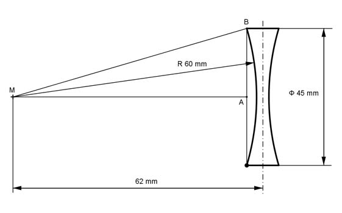

Aufgabe 384 Wie groß ist die gekrümmte Fläche A der symmetrischen Doppeltkonkavlinse?  Satz von Pythagoras im Dreieck MAB: MB = r AB = 45 mm/2 = 22,5 mm MB² = MA² + AB² |-AB² MA² = MB² - AB² = 60² mm² - 22,5² mm² = 3 093,75 mm² |√ MA = 55,6 mm Höhe h eines Kugelabschnitts: h = 60 mm - 55,6 mm = 4,4 mm A = 2 * 2 * л * r * h = 2 * 2 * л * 60 mm * 4,4 mm = 3 316 mm² A = 33,2 cm²